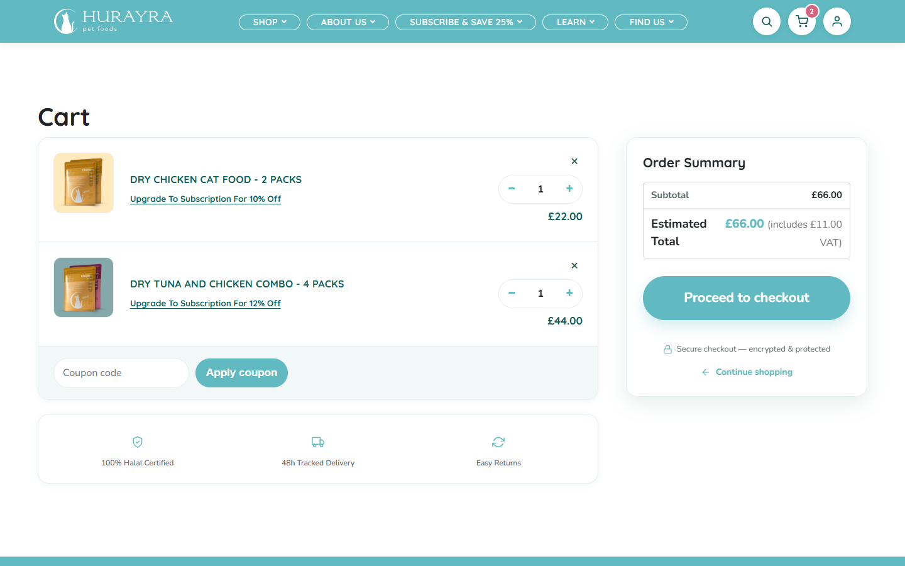
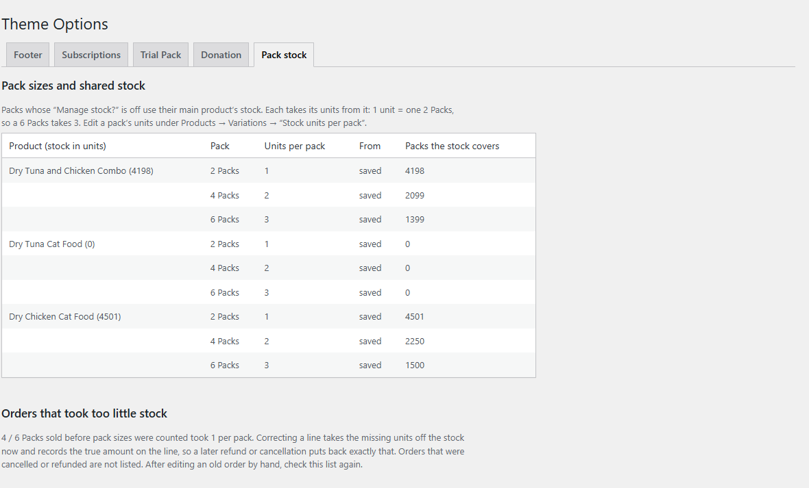
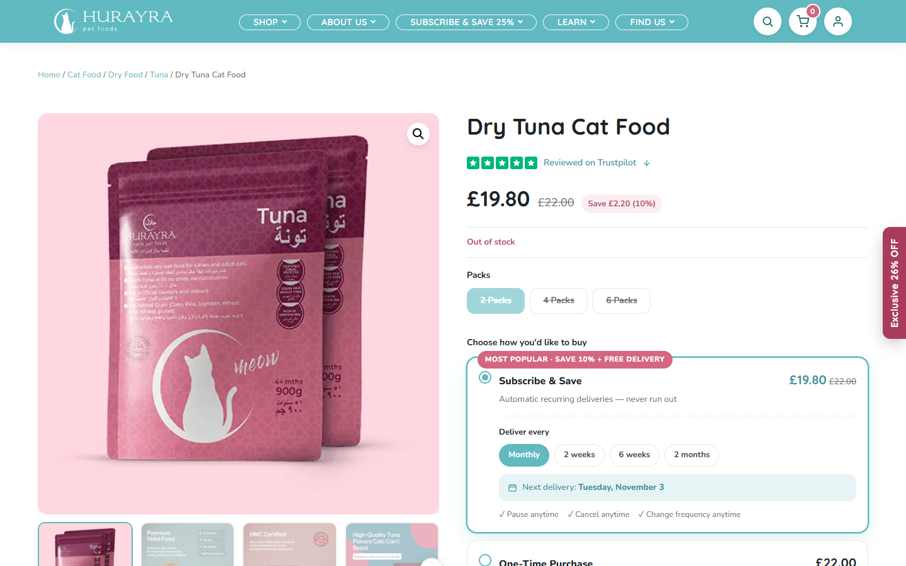
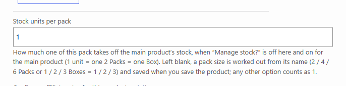
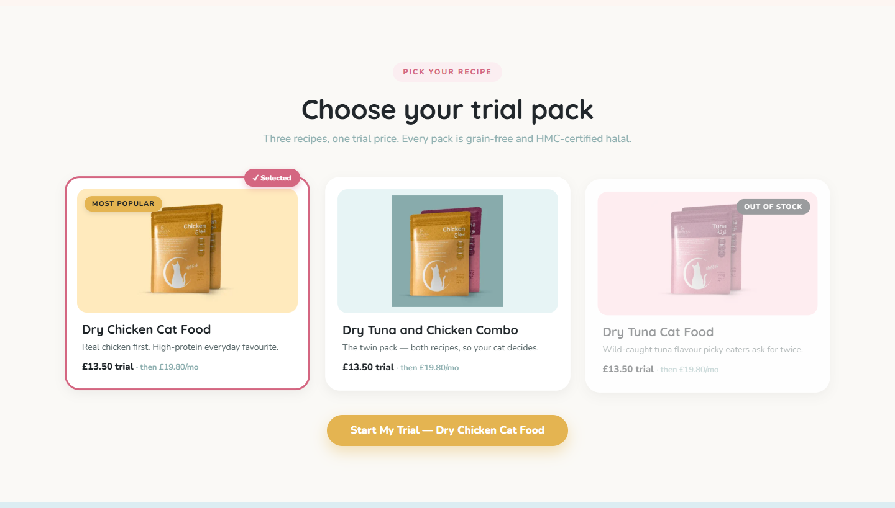
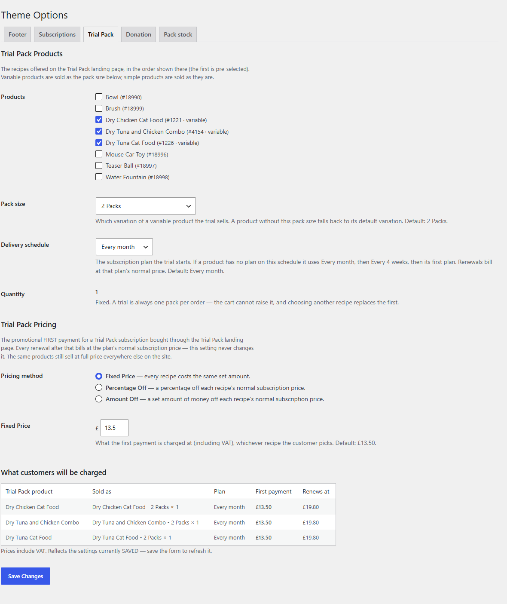
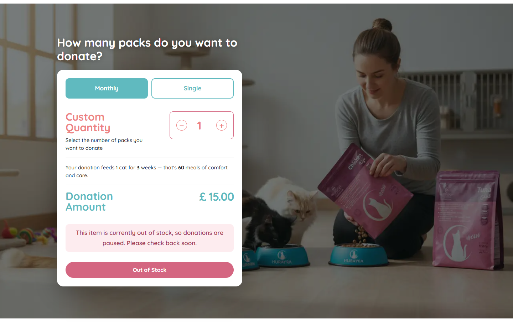
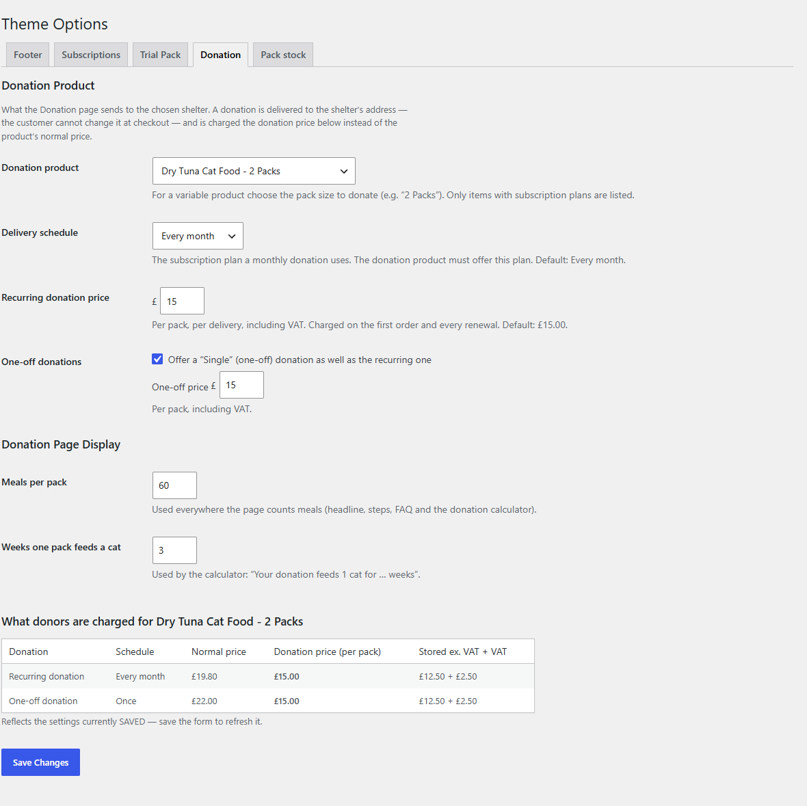
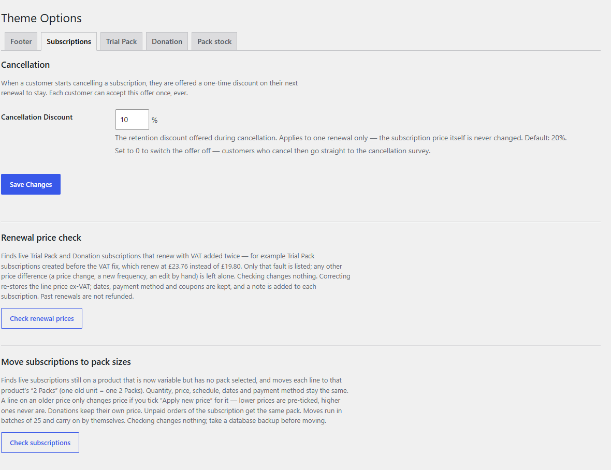
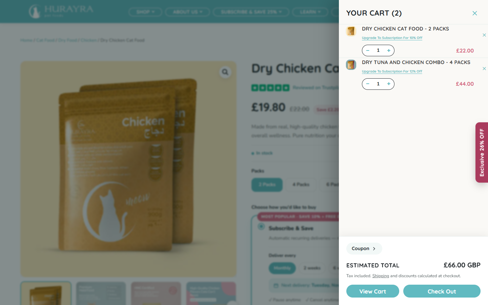

This update brings in pack sizes (2, 4 and 6 Packs) across the shop, counts stock correctly for each pack size, rebuilds the Trial Pack and shelter Donation pages, and moves existing subscribers onto the new pack sizes. It also fixes several pricing problems on subscription renewals.
Version 1.13.0Prepared 6 October 2026Status tested on the development copy, next step is the staging site
1Pack sizes across the shop
Dry Chicken, Dry Tuna and the Tuna & Chicken Combo are now sold as 2 Packs, 4 Packs or 6 Packs. Customers pick a pack size on the product page, and that choice carries through everywhere they shop.
Pack size buttons on the product page, shop cards and the Shop menu.
Each pack size has its own price and its own subscription discount and delivery schedules.
The basket names the pack (for example “Dry Tuna and Chicken Combo – 4 Packs”).
In My Account, subscribers can Swap to another recipe or pack size, and Change Frequency using the schedules their pack offers. The next delivery date is worked out from their last delivery.
All subscription prices on the site (product page, cards, cart, Trial Pack, Donation, cancellation offer) now come from one place, so they always match what checkout charges.
Product page: choose a pack size, then subscribe or buy once.

Cart: the pack size is part of each item’s name.
2Stock counted by pack size
All pack sizes of a product share one stock count, kept on the main product. Stock is counted in units of one 2 Packs, so a larger pack takes more of it.
Pack size
Takes from stock
2 Packs
1 unit
4 Packs
2 units
6 Packs
3 units
This applies to new orders, subscription renewals, cancellations, refunds and orders edited by hand. Each order line records how many units it took, so a refund puts back exactly that.
The basket and checkout stop customers ordering more than is in stock, and the product page shows “Out of stock” on pack sizes that can’t be supplied.
A new Pack stock screen in Theme Options shows how many of each pack the stock covers. It also finds older 4 and 6 Packs orders that were sold before pack sizes were counted and took too little stock, and corrects them.
If a pack is renamed later (for example “2 Packs” to “1 Box”), its units can be set by hand on the product.

Theme Options → Pack stock. The figures here are from the test copy, not your live stock.

An out-of-stock product: every pack size is crossed out.

Products → Variations: “Stock units per pack” for each pack size.
3Trial Pack
The Trial Pack page is now run from a Trial Pack tab in Theme Options, so recipes and prices can be changed without a developer.
Choose which recipes appear, which pack size the trial sells (default 2 Packs) and the delivery schedule (default monthly).
Set the first payment as a fixed price, a percentage off, or an amount off. A table shows exactly what customers pay first and what they renew at.
One trial per order, quantity 1. Picking another recipe replaces the first one.
Recipes that are out of stock show an “Out of Stock” badge and can’t be chosen.
FixedTrial Pack subscriptions were renewing at £23.76 instead of £19.80, because VAT was added twice. New trials renew at the right price, and existing affected subscriptions can be corrected (see section 6).

Trial Pack page: the out-of-stock recipe can’t be selected.

Theme Options → Trial Pack, with the “What customers will be charged” table at the bottom.
4Shelter donations
The Donation page lets customers send food to a partner shelter every month or once. It is now run from a Donation tab in Theme Options.
Choose the donated product and pack size (currently Dry Tuna, 2 Packs), the schedule, and the monthly and one-off prices (default £15 per pack).
The meals and weeks figures on the page (“Your donation feeds 1 cat for 3 weeks”) come from the same tab.
A donation always ships to the chosen shelter. Customers can’t change the delivery address at checkout.
The £15 donation price stays on the subscription and on every renewal. Swap and Change Frequency are turned off for donations.
When the donated product is out of stock, donations pause with a clear message.
FixedDonation checkout was checking the wrong product, so the shelter’s address was never filled in. It was also possible to get the donation price without choosing a shelter. Both are fixed.

Donation page while Dry Tuna is out of stock on the test copy: donations are paused.

Theme Options → Donation.
5Existing subscribers moved to pack sizes
Subscriptions started before the change are still on the old single product with no pack size. A new tool in Theme Options → Subscriptions moves them onto 2 Packs. It runs in batches, and it makes no changes until you press Move.
Decision
What happens
Quantity
Kept. A subscriber with 2 of the old product gets 2 × 2 Packs.
Price
Kept as it is. A new price only applies if you tick “Apply new price”. That box is pre-ticked only when the new price is lower, never when it would raise the bill.
Donations
Stay at £15. A subscription that only ships to a shelter’s address, but isn’t marked as a donation, is listed for you to check rather than moved.
Schedules
Kept. Subscribers on every 3 months or every 5 weeks keep those schedules.
Coupons, dates, payment
Kept. Unpaid renewal orders are moved too.
Subscription #5823
Will be changed to 2 Packs every 2 weeks at £19.80, as agreed.

Theme Options → Subscriptions: “Check subscriptions” lists every subscription and what will happen to it before anything is moved.
6Renewal price fixes
The Renewal price check on the same Subscriptions tab finds Trial Pack and Donation subscriptions that renew with VAT added twice, and corrects them. It only lists that fault. Any other price difference, such as a price you changed on purpose, is left alone.
Pressing Check shows the list and changes nothing.
Correcting keeps dates, payment method and coupons, and adds a note to each subscription.
Renewals already charged are not refunded automatically. Refunds for past overcharges are your decision.
Subscription #19090 will be lowered to £19.80, as agreed.
7Cart and basket improvements
Pressing “+” when no more stock is available now says “Sorry, only X available.” instead of doing nothing.
In the slide-out basket, that message floats above the basket footer, so items don’t jump around while the customer is using it.
“Frequently bought together” now runs the same checks as a normal add-to-basket (stock, donation baskets, subscription rules). If an item can’t be added, the customer is told why.
Products that are out of stock can’t be added from the Donation or Trial Pack pages.

The slide-out basket.
8Going live and what we need from you
Pack Size Pricing Structure
Please review and confirm the exact pricing for each pack size option: